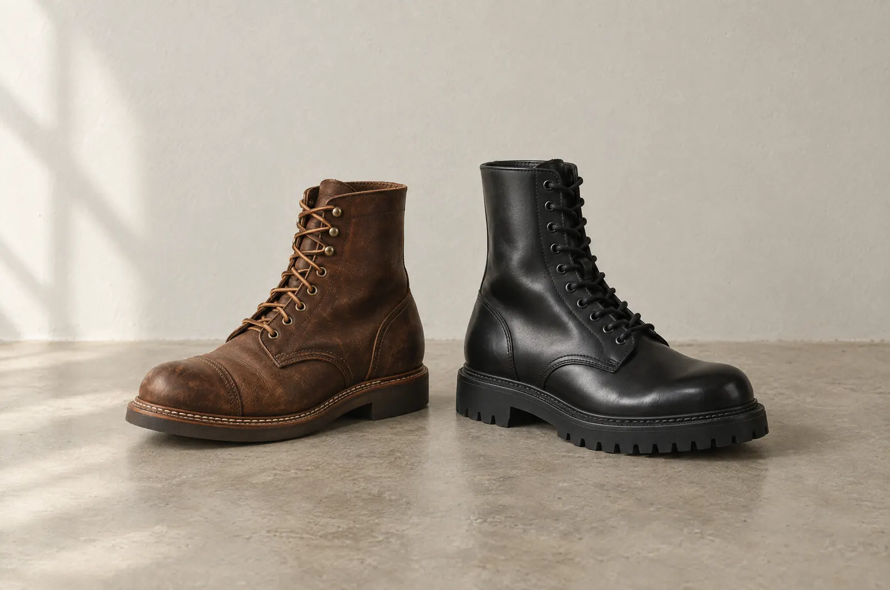
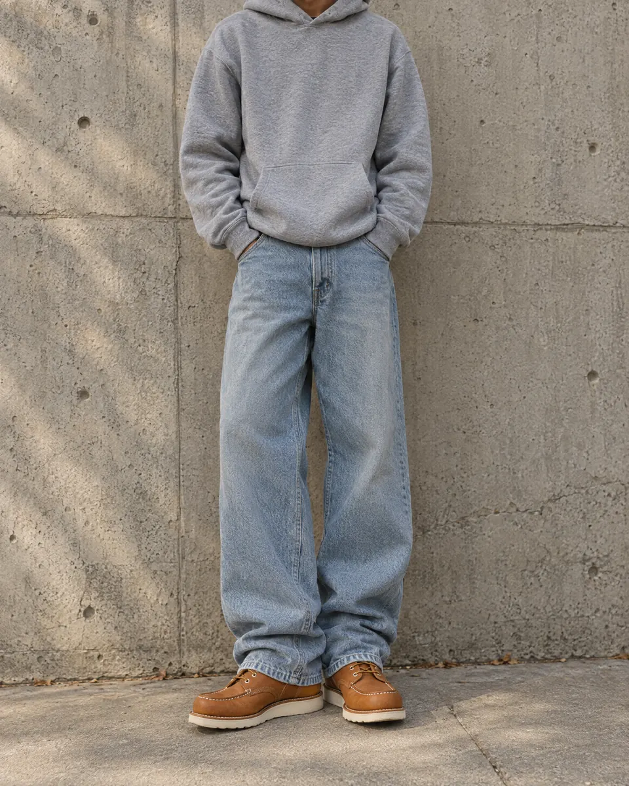
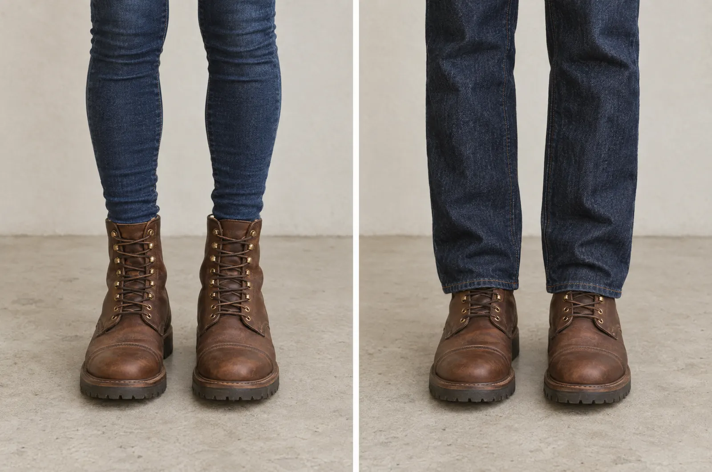
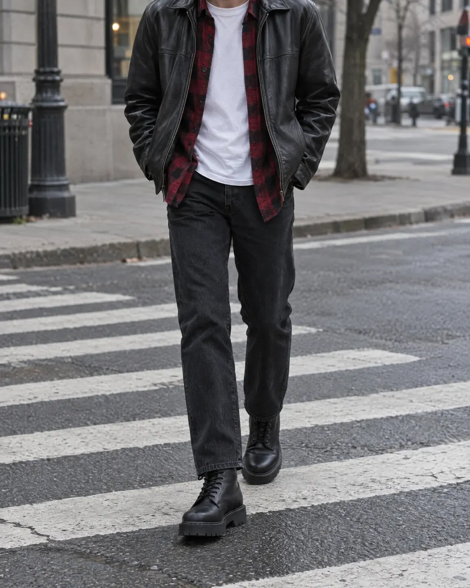
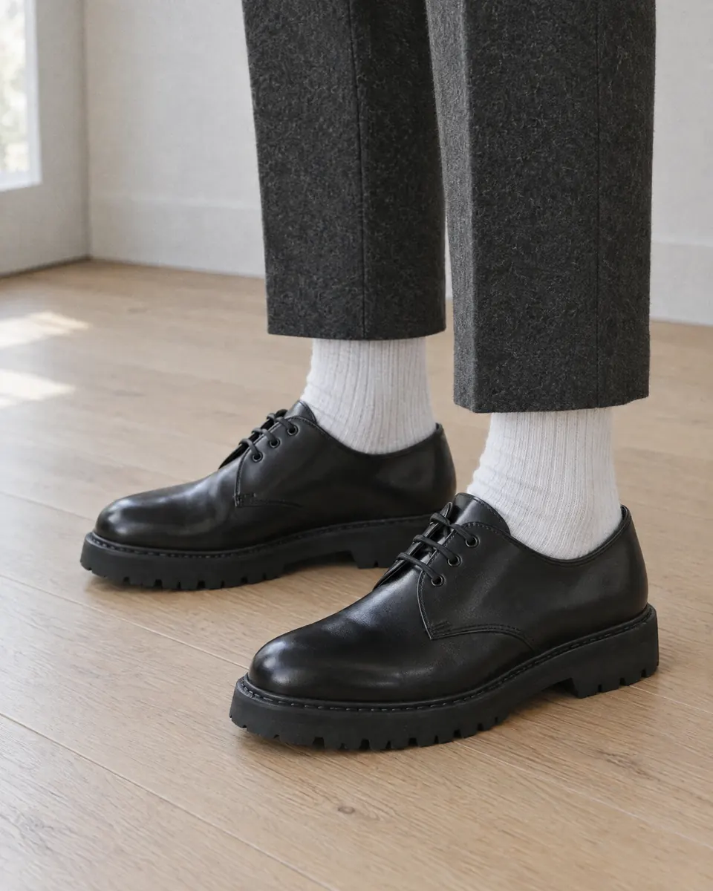

셀비지 데님 + 왁스 캔버스 재킷
데님과 캔버스 같은 작업복 원단이 이 부츠를 입는 제일 좋은 방법이라는 평이에요.
Stridewise레딧·해외 포럼·부츠 리뷰·국내 커뮤니티 의견을 한 장에 모았어요. 어떤 옷이랑 입는지, 어떤 모델을 고르는지까지.

AI 예시 사진01 / 한눈에 비교
커뮤니티에서 공통으로 나오는 이야기예요. 무엇이 더 중요한지에 따라 답이 갈려요.
‘유리’는 커뮤니티·리뷰어 의견 기준이에요. 가격은 레드윙 공식 사이트(2026-09-28 확인), 닥터마틴은 Stridewise 리뷰에 적힌 값이에요.
02 / 레드윙 코디
부츠가 투박해서 스트레이트나 와이드 핏 청바지가 가장 잘 맞아요.
데님과 캔버스 같은 작업복 원단이 이 부츠를 입는 제일 좋은 방법이라는 평이에요.
Stridewise
AI 예시 사진목토는 젊고 스트릿한 느낌이라 후드와 잘 어울려요. 아이언레인저는 후드와 결이 달라요.
Stridewise
AI 예시 사진03 / 닥터마틴 코디
레드윙과 가장 큰 차이예요. 데님 하나만 있어도 쉽게 맞춰져요.

AI 예시 사진안에는 티셔츠. 부츠 느낌을 살리는 기본 조합이에요.
OnPointFresh
AI 예시 사진그레이 주름 바지 + 흰 양말도 같은 방식으로 입어요.
OnPointFresh04 / 사기 전에
SIZE사이즈
리뷰어는 레드윙을 반 사이즈 내렸고, 닥터마틴은 반 사이즈가 없어서 한 사이즈 내렸대요. 개인차가 커서 매장에서 신어 보는 게 제일 정확해요.
StridewiseWEIGHT무게
팀버랜드 6인치보다도 레드윙이 확실히 무겁다는 국내 후기가 있어요. 가볍고 편한 게 중요하면 닥터마틴 쪽이에요.
어미새05 / 나는 어느 쪽?
세 가지만 골라 보세요.
1. 바지는 주로?
2. 더 중요한 건?
3. 가격은?
모델 고르기
모델 고르기
06 / 출처
커뮤니티와 리뷰어의 의견을 모은 거라 사람마다 다를 수 있어요. 가격은 바뀔 수 있고, 국내 가격은 따로 확인이 필요해요.
사진은 모두 Higgsfield로 만든 AI 예시 이미지예요. 실제 브랜드 제품 사진이 아니에요.